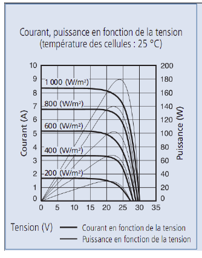
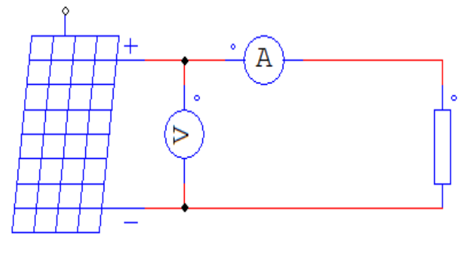
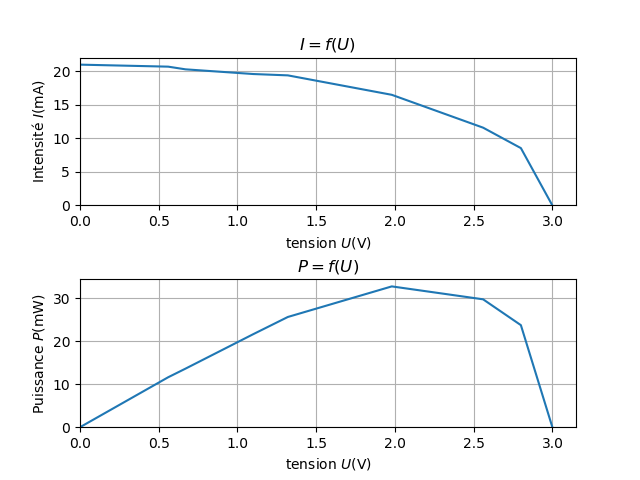

L'objectif est ici de retrouver les courbes suivantes
Pour réaliser notre expérience, nous appliquons le protocole suivant :
Le schéma a réaliser pour effectuer les caractéristiques du panneau solaire est le suivant:
| R (Ω) | U (V) | I (mA) | P=UxI (mW) |
| 27 | 0,56 | 20,7 | 11,6 |
| 33 | 0,67 | 20,3 | 13,6 |
| 56 | 1,11 | 19,6 | 21,6 |
| 68 | 1,32 | 19,4 | 25,6 |
| 120 | 1,98 | 16,5 | 32,7 |
| 220 | 2,56 | 11,6 | 29,7 |
| 330 | 2,80 | 8,55 | 23,7 |
Ces résultats nous permettent de tracer les courbes suivantes
Les courbes obtenues sont conformes aux courbes constructeurs. Elles ont effectivement la même forme.